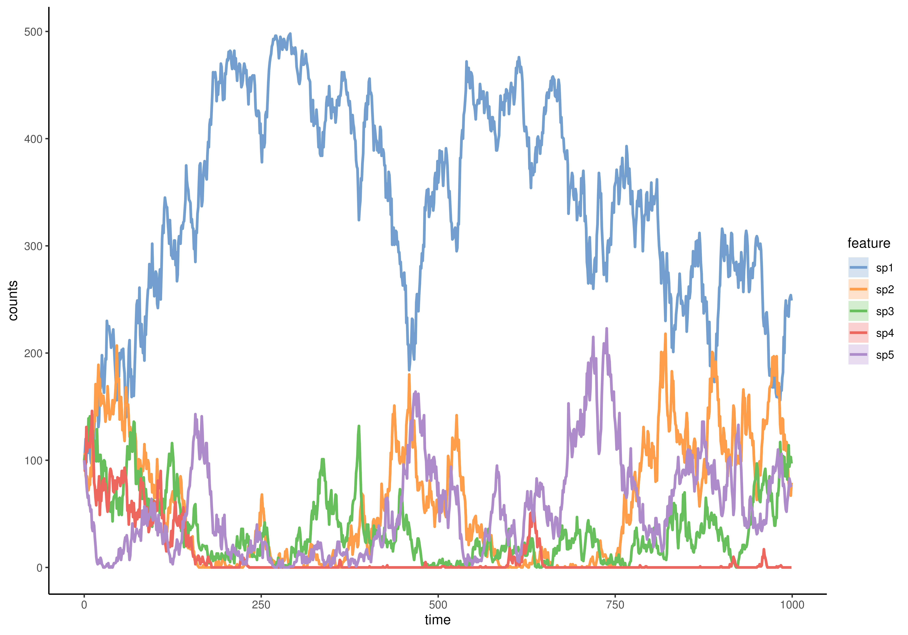

Hubbell's neutral model simulation applied to time series
Source:R/simulateHubbellRates.R
simulateHubbellRates.RdNeutral species abundances simulation according to the Hubbell model. This model shows that losses in society can be replaced either by the birth of individuals or by immigration depending on their probabilities. The specific time between the events of birth or migration is calculated and time effect is considered to determine the next event.
Usage
simulateHubbellRates(
n_species = NULL,
x0 = NULL,
names_species = NULL,
migration_p = 0.01,
metacommunity_probability = NULL,
k_events = 1,
growth_rates = NULL,
error_variance = 0,
norm = FALSE,
t_end = 1000,
...
)Arguments
- n_species
Integer: number of species
- x0
Numeric scalar. Indicates the initial species composition. IfNULL,rep(100, n_species)is used.- names_species
Character: names of species. If NULL,
paste0("sp", seq_len(n_species))is used. (default:names_species = NULL)- migration_p
Numeric: the probability/frequency of migration from a metacommunity. (default:
migration_p = 0.01)- metacommunity_probability
Numeric: Normalized probability distribution of the likelihood that species from the metacommunity can enter the community during the simulation. If NULL,
rdirichlet(1, alpha = rep(1,n_species))is used. (default:metacommunity_probability = NULL)- k_events
Integer scalar. Indicates the number of events to simulate before updating the sampling distributions. (Default:1)- growth_rates
Numeric scalar. Indicates the maximum growth rates(mu) of species. IfNULL,rep(1, n_species)is used. (Default:NULL)- error_variance
Numeric: the variance of measurement error. By default it equals to 0, indicating that the result won't contain any measurement error. This value should be non-negative. (default:
error_variance = 0)- norm
Logical: whether the time series should be returned with the abundances as proportions (
norm = TRUE) or the raw counts (default:norm = FALSE) (default:norm = FALSE)- t_end
Numeric: the end time of the simulationTimes, defining the modeled time length of the community. (default:
t_end = 1000)- ...
additional parameters, see
utilsto know more.
References
Rosindell, James et al. "The unified neutral theory of biodiversity and biogeography at age ten." Trends in ecology & evolution vol. 26,7 (2011).
Examples
set.seed(42)
tse <- simulateHubbellRates(n_species = 5)
miaViz::plotSeries(tse, x = "time")
#> Warning: no non-missing arguments to max; returning -Inf
#> Warning: no non-missing arguments to max; returning -Inf
#> Warning: no non-missing arguments to max; returning -Inf
#> Warning: no non-missing arguments to max; returning -Inf
#> Warning: no non-missing arguments to max; returning -Inf

# no migration, all stochastic birth and death
set.seed(42)
tse1 <- simulateHubbellRates(n_species = 5, migration_p = 0)
# all migration, no stochastic birth and death
set.seed(42)
tse2 <- simulateHubbellRates(
n_species = 5,
migration_p = 1,
metacommunity_probability = c(0.1, 0.15, 0.2, 0.25, 0.3),
t_end = 20,
t_store = 200
)
# all migration, no stochastic birth and death, but with measurement errors
set.seed(42)
tse3 <- simulateHubbellRates(
n_species = 5,
migration_p = 1,
metacommunity_probability = c(0.1, 0.15, 0.2, 0.25, 0.3),
t_end = 20,
t_store = 200,
error_variance = 100
)
# model with specified inputs
set.seed(42)
tse4 <- simulateHubbellRates(
n_species = 5,
migration_p = 0.1,
metacommunity_probability = c(0.1, 0.15, 0.2, 0.25, 0.3),
t_end = 200,
t_store = 1000,
k_events = 5,
growth_rates = c(1.1, 1.05, 1, 0.95, 0.9)
)